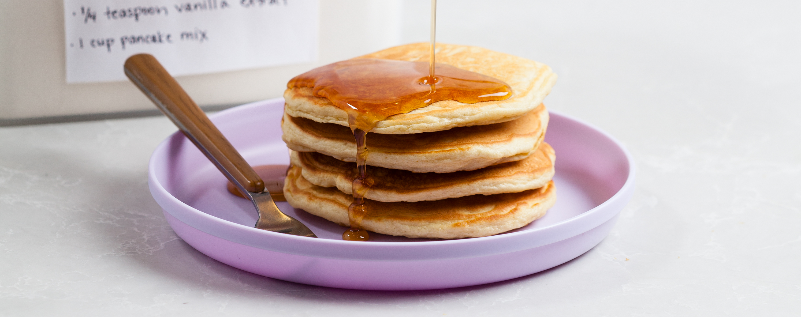

Fluffy Buttermilk Pancakes

Who wouldn't want to wake up to a stack of warm, fluffy pancakes drizzled with maple syrup? This is my go-to recipe for basic yet oh-so-delicious pancakes that never fail to satisfy!
Ingredients
- 2 cups all-purpose flour
- 2 tbsp granulated sugar
- 1 tsp baking powder
- 1/2 tsp baking soda
- 1/2 tsp salt
- 2 cups buttermilk (or 2 cups milk mixed with 2 tablespoons lemon juice or vinegar)
- 1/4 cup sour cream
- 2 large eggs
- 3 tbsp unsalted butter, melted and cooled slightly
- 1-2 tsp vegetable oil
Steps
- Whisk flour, sugar, baking powder, baking soda, and salt together in a medium bowl. In second medium bowl, whisk buttermilk, sour cream, eggs, and melted butter together. Make well in center of dry ingredients and pour in wet ingredients; gently stir until just combined(batter should remain lumpy with few streaks of flour). Do not overmix. Let batter sit 10 minutes before cooking.
- Heat 1 teaspoon oil in large nonstick skillet over medium heat until shimmering.
- Using 1/4-cup dry measuring cup (or a trusty ladle), portion batter into pan in 4 places. Cook until edges are set, first side is goldren brown, and bubbles on surface are just beginning to break, 2 to 3 minutes. Using a thin, wide spatula, flip pancakes and continue to cook until second side is golden brown, 1 to 2 minutes longers. Serve pancakes immediately. Repeat with remaining batter, using remaining oil as necessary.
Recipe from America's Test Kitchen.
Back to top of page
Home